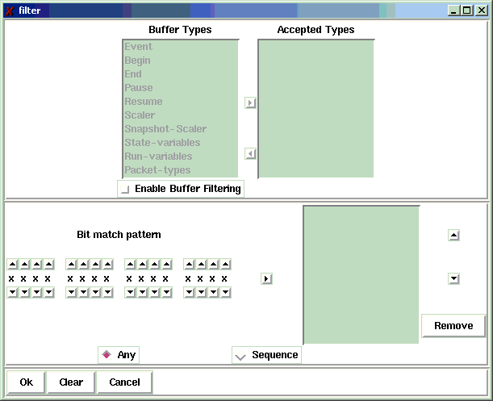

Filter->Filter...
The Filter->Filter... command supports the establishment of
buffer filters. Buffer filters in
conjunction with search patterns provide
powerful tools to selectively examine data buffer contents.
When you select the Filter->Filter... command the filter
creation dialog shown below is displayed:

This dialog is divided into three panes:
- The top pane allows you to enable filtering by buffer
type and select which buffer types will be accepted.
You must enable this pane by selecting the Enable
Buffer Filtering checkbutton.
- Select the buffer types
you wish to accept in the left list box and click the
right arrow button to transfer them to the right listbox.
- If there are buffers type in the right listbox you no longer
wish to accept, select them and click the left arrow button to
return them to the left listbox.
- The second frame allows you to specify bit pattern matches within the buffer
if no bit patterns are specified, all buffers accepted match. Describing
bit pattern matches is done in a manner simlilar to specifying
bit patterns for searches:
- The row of 'x's at the left of this part of the dialog
represent the 16 bits of a binary word. Use the up and down arrow keys
to select the desired state for each bit or leave a bit at 'x' if you
don't care about its state.
- Once you have edited a bit pattern, add it to the pattern list by
clicking the right arrow button just to the right of the bit pattern.
- You can remove a bit pattern you no longer want from the list by
selecting it and clicking the Remove button at the right of the list.
- You can re-order a bit pattern upwards or downwards by selecting it
and clicking either the up or down arrow buttons to the right of the
list. Note that order is only important for bit sequence matches
- Select the Any radio button to specify a match on
any of the patterns in the box. Select the Sequence
radio button to specify a match on the ordered sequence of bit
patterns specified in the list box.
- The bottom frame of the dialog provides 3 buttons:
- Ok When clicked accepts the filter for application
when getting the next buffer from the data source
- Clear clears the filter so that if accepted with Ok
all buffers will be accepted.
- Cancel dismisses the dialog box without making any changes
to the filter criterion.
If a bit pattern search is specified, once a matching buffer is found, the first
occurance of the bit pattern is located an highlighted as if a search for it had
been performed.
NOTE
This search is a one-time search. Any previously established search
(via Filter->Search...) is not modified and
is what will be located via a Filter->Search Next
Please report all errors to http://daqbugs.nscl.msu.edu
>